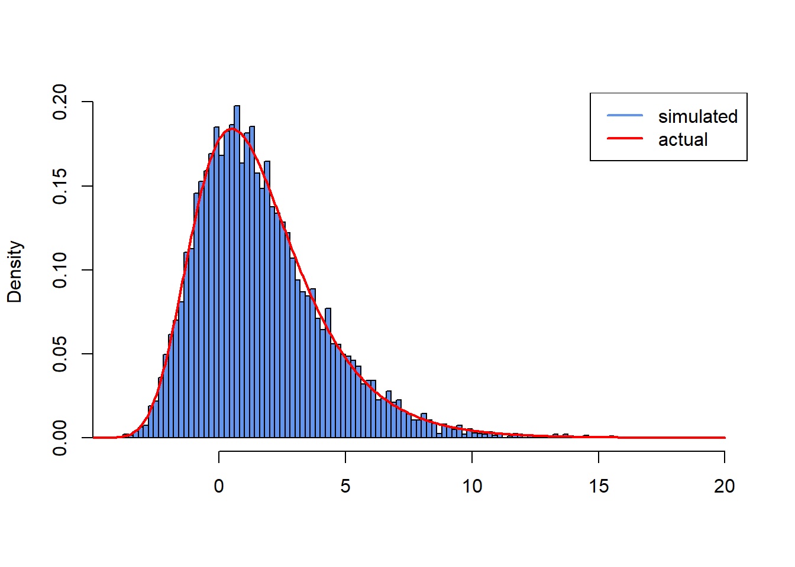
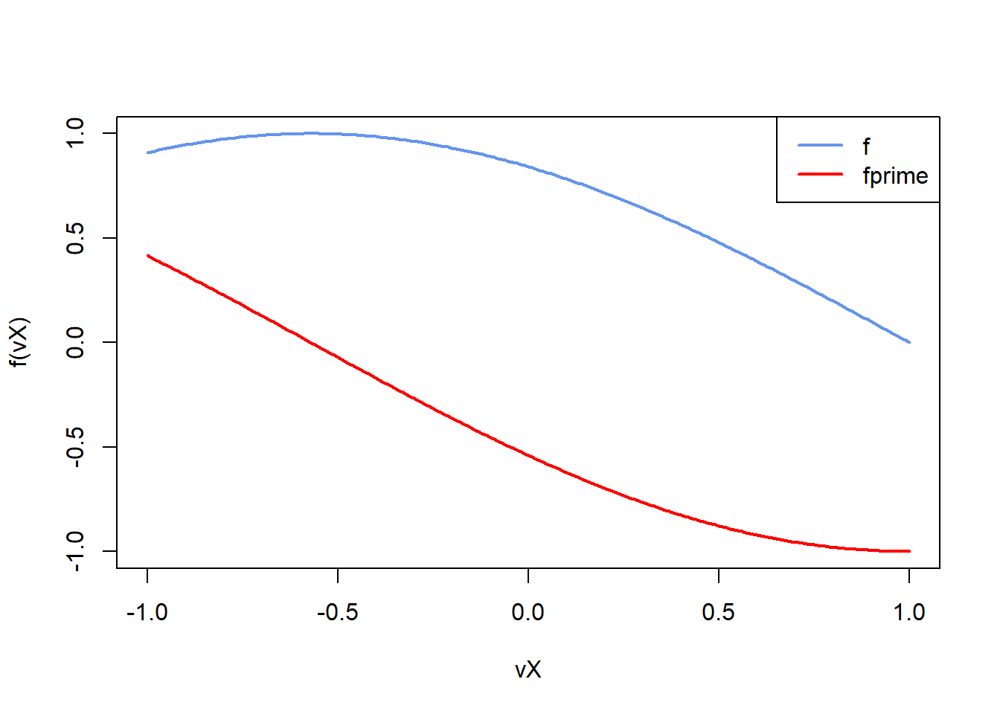

19 Ordinary exam 2020
19.1 Problem 1:
In this first part of the exam you are tasked with several independent problems. If you are unable to solve an exercise move on to the next. Set and use the seed 1337 for all exercises in Problem 1.
- Create a data structure of the type
data.frameconsisting of two equal length columns. The first column should contain 100 draws from the Gaussian (normal) distribution with mean 10 and variance 100, i.e. \(N(10, 100)\). The second column should contain 100 draws from the standard uniform distribution, i.e. \(U(0,1)\). Assign the two columns in thedata.framethe names “rnorm” and “runif”. Calculate and print the mean and standard deviation of each column of thisdata.frame.
Solution:
- Count the number of strictly positive (\(>0\)) numerically valued elements in
Print your result to the console. Then define a new matrix equal to mA with every second row and every fifth column removed. Print to the console the second column of your new smaller matrix.
Solution:
set.seed(1337)
mA <- matrix(rnorm(10000), nrow = 100, ncol = 100)
sum(mA > 0)
#> [1] 4968
indices <- seq(1, nrow(mA))
mB <- mA[indices %% 2 != 0, indices %% 5 != 0]
mB[, 2]
#> [1] 0.20997680 1.37178507 -0.20485705 -0.80947218 0.06873847 -0.46916210
#> [7] -0.73977783 0.37774034 -0.90396001 -0.23914384 -0.31475060 -0.54221576
#> [13] -0.13401439 -0.44703293 -0.58097800 -0.64590441 -0.43772050 1.70627166
#> [19] 1.28239811 3.10367380 -0.25455142 0.11397658 0.28331947 -0.25257320
#> [25] -0.10787613 -1.68283890 0.59339153 1.42397245 -0.16762034 -0.28949467
#> [31] -0.38718739 -0.86600469 -0.16801229 -0.05423047 -0.15457321 1.20115726
#> [37] 0.89901990 -0.81578612 0.56388549 -0.52282158 0.55286246 -0.05125182
#> [43] -0.64952770 1.54842553 -1.13708264 -0.21124735 -1.45882620 -0.13385242
#> [49] 0.31359063 -0.94320880- Using \(10^7\) draws from the appropriate uniform distribution use Monte Carlo integration to approximate, \[ I = \int_3^{20} (x^3 - x^2 + 9)dx. \] Print your approximation of \(I\) to the console.
Solution:
- Consider the following function to calculate the diagonal of the sample covariance matrix between two matrices,
mXandmY
(The above function is included in the diagcovar.R file in the exam hand-out.)
Create a new function, say diag.covarVec, that is fully vectorized (or as vectorized as possible). Compare the run time of the two functions using,
You may, but do not need to, use the functionalities of the microbenchmark package. How much faster is your new function? If you cannot implement the vectorization, explain potential causes for inefficiencies and poor programming practices in the diag.covar function via comments in your script. If your code is not faster, comment briefly in the script why that might be the case.
Solution:
set.seed(1337)
diag.covar <- function(mX, mY) {
varcov <- 0
for(j in 1:10) {
dsum <- 0
for(i in 1:10) {
dsum <- dsum + (mX[i,j] - mean(mX[,j]))*(mY[i,j] - mean(mY[,j]))
}
varcov[j] <- dsum/(dim(mX)[1]-1)
}
return(varcov)
}
diag.covarVec <- function(mX, mY) {
mSum <- (t(mX) - colMeans(mX)) * (t(mY) - colMeans(mY))
varcov <- rowSums(mSum) / (dim(mX)[1]-1)
return(varcov)
}
mX <- matrix(rnorm(100), nrow = 10, ncol = 10)
mY <- matrix(rnorm(100), nrow = 10, ncol = 10)
diag.covar(mX, mY)
#> [1] -0.002280477 0.133113794 0.354419701 -0.881358047 -0.134682108
#> [6] -0.436054671 -0.425000809 -0.119402997 -0.309367075 0.287553344
diag.covarVec(mX, mY)
#> [1] -0.002280477 0.133113794 0.354419701 -0.881358047 -0.134682108
#> [6] -0.436054671 -0.425000809 -0.119402997 -0.309367075 0.287553344
suppressMessages(library(microbenchmark))
#> Warning: pakke 'microbenchmark' blev bygget under R version 4.3.3
microbenchmark(diag.covar(mX, mY), diag.covarVec(mX, mY))
#> Unit: microseconds
#> expr min lq mean median uq max neval
#> diag.covar(mX, mY) 998.1 1024.8 1084.195 1051.05 1085.75 2555.7 100
#> diag.covarVec(mX, mY) 18.9 20.0 73.218 22.00 26.70 4839.0 100- Construct a function that uses the inversion method to generate random variables, \(X \sim \text{Gumbel}(\mu, \beta)\), where \(\mu \in \mathbb{R}\) is the location parameter and \(\beta > 0\) the scale parameter of a Gumbel distribution. The Gumbel has the following cumulative distribution function, \[ F_X(x) = \exp\left(-\exp\left(-\frac{x-\mu}{\beta}\right)\right), \quad \beta > 0, \mu, x \in \mathbb{R} \] with probability density function, \[ f_X(x) = \frac{1}{\beta} \exp\left(-\left(\frac{x-\mu}{\beta} + \exp\left(-\frac{x-\mu}{\beta}\right)\right)\right), \quad \beta > 0, \mu, x \in \mathbb{R}. \] Use your function to generate a sequence of 10,000 random variables from \(\text{Gumbel}(0.5, 2)\). Produce a histogram of your generated random variable sequence using the built-in function
hist(). In the histogram set breaks equal to 141 and limit the range for the x-axis of the plot from the smallest to the largest value in your generated sequence of random Gumbels. In addition superimpose the theoretical probability density function for comparison. In order to superimpose the theoretical probability density unto the histogram use the built-inlines()function with appropriate inputs (one input could be theseq()function that generates a sequence from -5 to 20 by step increments of 0.05).
Solution:
set.seed(1337)
Gumbel <- function(mu, beta, size) {
U <- runif(size)
return(mu - beta * log(-log(U)))
}
vX <- Gumbel(0.5, 2, 10000)
hist(vX,
freq = FALSE,
breaks = 141,
col = "cornflowerblue",
xlab = "",
ylab = "Density",
main = "",
xlim = c(min(vX), max(vX)))
vInput <- seq(-5, 20, 0.05)
fGumbelPdf <- function(mu, beta, x) {
return(1/beta * exp(-((x-mu)/beta + exp(-(x-mu)/beta))))
}
lines(vInput, fGumbelPdf(0.5, 2, vInput), type = "l", col = "red", lwd = 2)
legend("topright",
legend = c("simulated", "actual"),
col = c("cornflowerblue", "red"),
lwd = 2) 
19.2 Problem 2:
Consider the following function \(f: \mathbb{R} \to \mathbb{R}\) and its derivatives: \[ f(x) = \sin(x + \pi - 1) \quad (1.1) \] \[ f'(x) = \cos(x + \pi - 1) \quad (1.2) \] \[ f''(x) = -\sin(x + \pi - 1) \quad (1.3) \]
- Write three R functions with input \(x\) that return \(f(x)\), \(f'(x)\), and \(f''(x)\). Provide a line plot of the function and its first derivative on the interval [-1,1].
Solution:
f <- function(x) {
return(sin(x + pi - 1))
}
fPrime <- function(x) {
return(cos(x + pi - 1))
}
fDoublePrime <- function(x) {
return(-sin(x + pi - 1))
}
vX <- seq(-1, 1, 0.01)
plot(vX, f(vX), type = "l", col = "cornflowerblue", lwd = 2, ylim = c(-1, 1))
lines(vX, fPrime(vX), type = "l", col = "red", lwd = 2)
legend("topright",
legend = c("f", "fprime"),
col = c("cornflowerblue", "red"),
lwd = 2)
- Write an R function that maximizes R scalar functions using the simple Newton-Raphson method with analytical derivatives. The function should also have a starting value input, two reasonable options for the convergence criterion that can be specified by the user, and not run indefinitely. It should return a list with the following elements:
- the maximizer
- the function value at the optimum
- the number of iterations used
- a short description which stopping criterion was used and whether convergence was achieved
Solution:
NM <- function(f, f_prime, f_sec, dX0, dTol = 1e-9, n.max = 1000){
dX <- dX0
fx <- f(dX)
fpx <- f_prime(dX)
fsx <- f_sec(dX)
n <- 0
while ((abs(fpx) > dTol) && (n < n.max)) {
dX <- dX - fpx/fsx
fx <- f(dX)
fpx <- f_prime(dX)
fsx <- f_sec(dX)
n <- n + 1
}
if (n == n.max) {
return(list(
maximizer = dX,
function.val = f(dX),
n.iter = n,
msg = "Failed to converge. Max number of iterations reached."
))
} else {
return(list(
maximizer = dX,
function.val = f(dX),
n.iter = n,
msg = "Convergence reached."
))
}
}- Write a C++ function using Rcpp and RcppArmadillo that can be loaded via
sourceCpp(). The function should contain a bisection method to find the root of a scalar function. The function should be able to take any R scalar function as input. Set the default interval for the root between [-1,1]. It should return or print a warning if the starting conditions for the bisection method are not fulfilled. Else it should return a list with the following elements:- the root
- the function value at the root
- the number of iterations used Remark: If you cannot solve it in C++ you can earn some points for doing it in R
// [[Rcpp::depends(RcppArmadillo)]]
#include <RcppArmadillo.h>
using namespace arma;
using namespace Rcpp;
// [[Rcpp::export]]
List bisection_cpp(Function f, double dXLeft = -1.0, double dXRight = 1.0, double dTol = 0.0001, int maxIter = 1000) {
if (dXLeft >= dXRight) {
stop("Starting conditions not met");
}
double fLeft = as<double>(f(dXLeft));
double fRight = as<double>(f(dXRight));
if (fLeft == 0) {
List lOut;
lOut["root"] = dXLeft;
lOut["func_at_root"] = fLeft;
lOut["num_ite"] = 0;
return lOut;
} else if (fRight == 0) {
List lOut;
lOut["root"] = dXRight;
lOut["func_at_root"] = fRight;
lOut["num_ite"] = 0;
return lOut;
} else if (fLeft * fRight > 0) {
stop("error: f(x.l)*f(x.r) > 0");
}
int iter = 0;
while ((dXRight - dXLeft) > dTol && (iter < maxIter)) {
double dXMid = (dXLeft + dXRight)/2;
double fMid = as<double>(f(dXMid));
if (fMid == 0) {
return(dXMid);
} else if (fLeft * fMid < 0) {
dXRight = dXMid;
fRight = fMid;
} else {
dXLeft = dXMid;
fLeft = fMid;
}
iter = iter + 1;
}
List lOut;
lOut["root"] = (dXLeft + dXRight)/2;
lOut["func_at_root"] = as<double>(f((dXLeft + dXRight)/2));
lOut["num_ite"] = iter;
return lOut;
}suppressMessages(library(Rcpp))
#> Warning: pakke 'Rcpp' blev bygget under R version 4.3.3
suppressMessages(library(RcppArmadillo))
#> Warning: pakke 'RcppArmadillo' blev bygget under R version 4.3.3
sourceCpp('exam2020cpp.cpp')- Use the functions from 2.) and 3.) and the build-in functions
optim()anduniroot()to find the maximizer of \(f(x)\) in the interval [-1,1]. Use appropriate starting values. Also provide a benchmark comparing their computation times. Remark: If you cannot solve 2.) and/or 3.) you can still earn points for using the remaining functions only.
Solution:
NM(f, fPrime, fDoublePrime, 0)$maximizer
#> [1] -0.5707963
bisection_cpp(fPrime, dXLeft = -1, dXRight = 1)$root
#> [1] -0.5707703
optim(0, f, method = "L-BFGS-B", lower = -1, upper = 1, control=list(fnscale=-1))$par
#> [1] -0.5707963
uniroot(fPrime, c(-1, 1))$root
#> [1] -0.5707835
suppressMessages(library(microbenchmark))
microbenchmark(
NM = NM(f, fPrime, fDoublePrime, 0)$maximizer,
Bisection = bisection_cpp(fPrime, dXLeft = -1, dXRight = 1)$root,
Optim = optim(0, f, method = "L-BFGS-B", lower = -1, upper = 1, control=list(fnscale=-1))$par,
UniRoot = uniroot(fPrime, c(-1, 1))$root
)
#> Unit: microseconds
#> expr min lq mean median uq max neval
#> NM 8.2 9.00 10.097 10.00 10.65 15.8 100
#> Bisection 20.6 21.95 37.109 25.00 26.70 1146.7 100
#> Optim 35.4 39.20 43.086 41.05 43.45 116.2 100
#> UniRoot 34.0 36.40 43.352 39.90 43.10 220.9 100- Create an R package that contains the functions from 2.) and 3.) and edit the title description to “This is my exam package”. Export the package as a bundled development version. Remark: If you cannot solve 2.) or 3.) you can still earn points. Create a package that contains an R and a C++ function with single scalar inputs that always return the number 5.